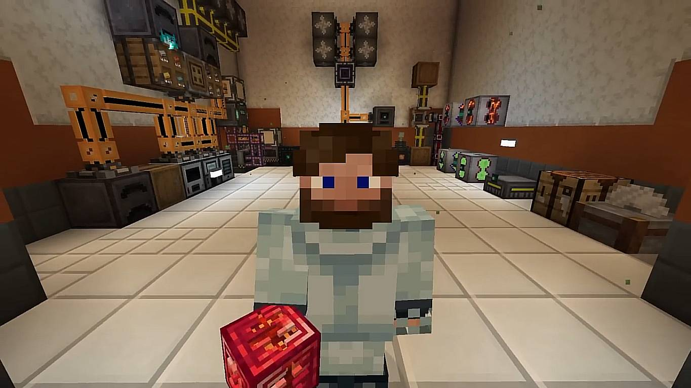

My Favorites
These are the mods and modpacks I come back to the most. Each one makes Minecraft more fun to build, explore, and play.
Favorite mods
Create
- Adds machines powered by rotation, like gears, belts, water wheels, and windmills
- Great for building automated farms, factories, and moving contraptions
Reason I like it
Create is a really cool mod that makes automation easy and gives you new things to automate. For example, I can use the Mechanical Harvester to automate my farms.
Applied Energistics 2 (AE2)
- Replaces rows of chests with a digital storage network you can search from one screen
- Can craft items for you automatically
Reason I like it
AE2 fixes my biggest storage frustration. Instead of organizing chests and searching through 20 of them, I can find everything in one interface. It takes a little time to learn, but once you understand it, it's easy to use.
Xaero's World Map
- Records everywhere you explore on a full-screen map
- Lets you place waypoints for bases, portals, and resources so you never get lost
Reason I like it
I like Xaero's World Map because it keeps things simple. It's easy to learn and does its job without cluttering the screen, which is why I prefer it more than map mods like JourneyMap.
ProjectE
- Gives items an energy value (EMC) that you can use to turn one item into another
- Speeds up progression once you learn how it works
Reason I like it
I don't use ProjectE often, but I think it's a cool mod. I can build an automated farm, like a sugar cane farm, and put what it makes into the Transmutation Table to turn it into EMC. Then I can spend that EMC to create other items, like a diamond, as long as I've already learned that item in the table. It saves me from searching the whole world for the resources I need.

Favorite modpacks
Project Architect 2
- A Minecraft 1.20.1 pack centered on advanced automation and EMC gameplay with ProjectE
- Runs on Forge
Reason I like it
I like this modpack because it's heavily focused on ProjectE's Transmutation Table. You start with the table, and the pack pushes you to use it. You build farms to earn EMC, then spend that EMC on better farming methods. The quest book is also very clear, with milestones that always give you something to work toward.
All the Mods 10 (ATM10)
- A massive pack with around 500 mods covering tech, magic, exploration, and building
- Runs on Minecraft 1.21.1 with NeoForge and needs a powerful computer
Reason I like it
I think I would enjoy this modpack even more if I played it with friends. Even solo, it was really fun, and there's always something to do. The quest book gives you plenty of quests that make you use a wide range of the mods in the pack.

Tips for choosing mods
- Don't use a lot of mods at first. Start with a small number, avoid too many mods that change a lot about the game, and add performance mods to keep it running smoothly.
- Read the mod page and the recent comments before you download. The page tells you which Minecraft version and mod loader the mod needs, and which other mods it depends on. The comments can show you whether it's working well right now or causing problems for other players.
- Add mods one at a time instead of all at once, and launch the game after each one. If the game crashes or starts running badly, you'll know the last mod you added is the cause, and it's much easier to fix.
- Choose mods you think you'll enjoy playing, not just the ones that are popular. A mod that's popular might not fit how you like to play, so pick the ones that match what you want to do in the game.